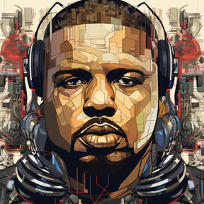

auto_awesome
AI
email
Emails
contacts
Contacts
2
ChatBot 2
Stories

dropdown content
doLoRes mAgee
doLoRes knows all and sees all
Filter
All Chats
Trash Bin
add
Compose
mail
Inbox
25
star
Starred
50
access_time
Snoozed
0
label_important
Important
1125
drafts
Drafts
5
Mark as Read
View Profile
Delete
Nothing in trash
Lets delete someting to test it.
New Group
Voice Clip